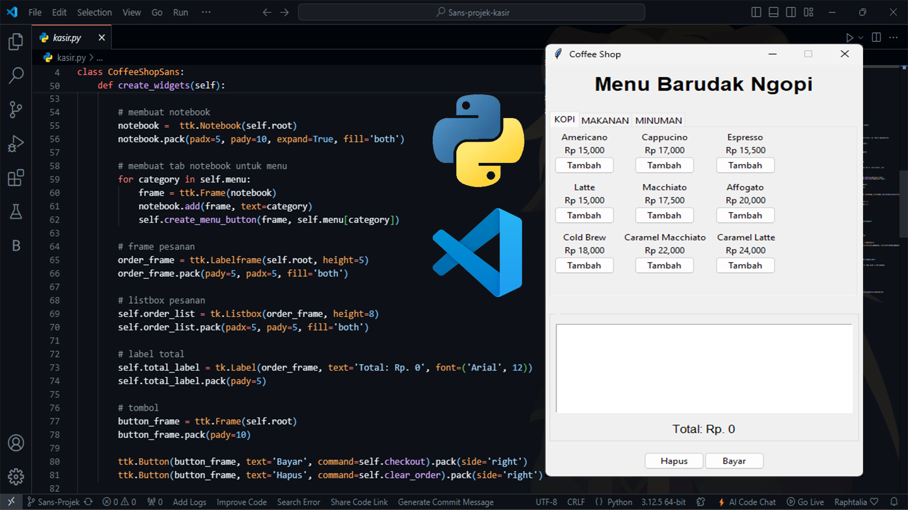
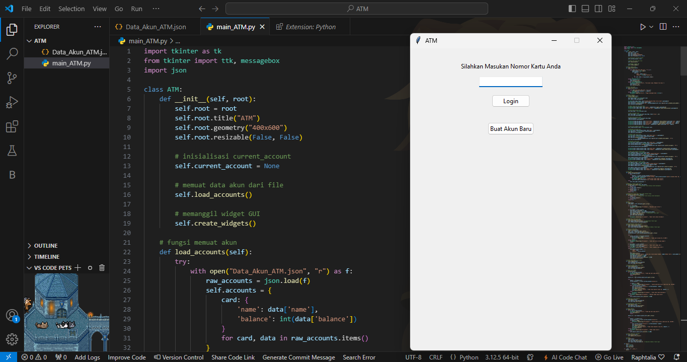

My Project
Program Kasir Sederhana

Program kasir sederhana yang dibuat ini adalah implementasi dari sebuah code aplikasi
kasir (Point of Sale atau POS) untuk sebuah kedai kopi. Aplikasi kasir adalah sebuah sistem
perangkat lunak yang diguanakan untuk mengelola operasi penjualan di bisnis ritel, termasuk
mencatat pesanan, menghitung total tagihan, memproses pembayaran, dan menghasilkan
laporan penjualan. Selengkapnya
Program ATM Sederhana

Dalam projek ini saya membuat program ATM sederhana dengan bahasa
pemrograman python GUI tkinter untuk memudahkan user berinteraksi dengan programnya,
Semoga bermanfaat. Selengkapnya
Program to-do list sederhana


Diakhir saya jelaskan kegunaan program ini yaitu untuk mengingatkan kita adanya tugas,
dengan bantuan database user anda dapat memisahkan tugas anda dan orang lain.
Selengkapnya